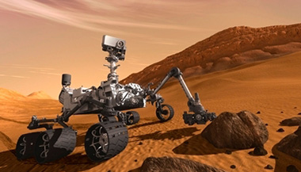

MISSION 01MARS EXPLORATION
Curiosity
rover
Curiosity is a robotic explorer sent to investigate Mars. Its observations of rocks, soil and atmosphere help scientists piece together the planet's environmental history and assess whether it could once have supported microbial life.
DESTINATIONMars
MISSION TYPERobotic rover